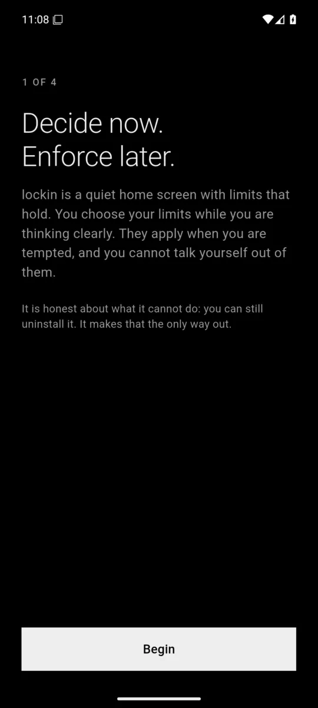
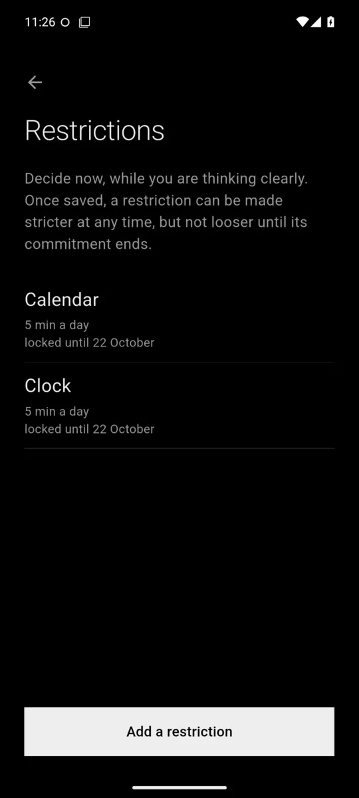
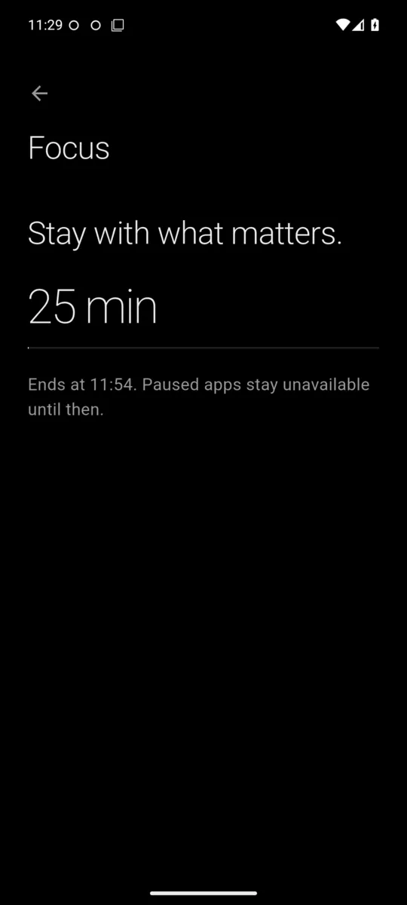
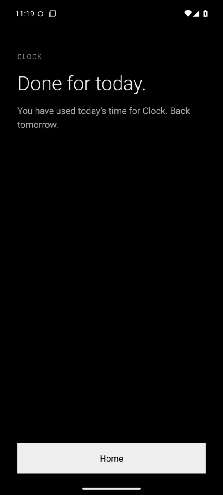
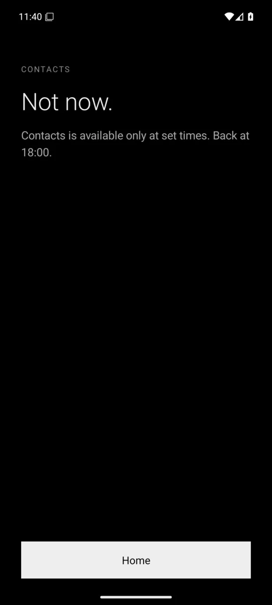

Decide now, enforce later
Setup asks you to choose your limits while you are calm and clear-headed.

Own product · Android app
A minimalist Android launcher with limits you cannot talk yourself out of.

Lockin replaces the home screen with a quiet, text-only one. You set your limits while you are thinking clearly, and they apply on their own when you are tempted. Loosening a limit takes seven days. Extra time comes only when a person you trust approves it, from a link in any browser.
Only the essentials, a search that respects your limits, and up to three priorities for the day.
Minutes per app per day, or access only at set times.
Tighten any time. Loosening waits a week, so a weak moment cannot undo a clear decision.
They get a link and answer in any browser. No app, no account.
Its limits and the ways around them are written down plainly, not hidden.
It only sees the name of the app in front. Requests carry only the app and the minutes.
Setup asks you to choose your limits while you are calm and clear-headed.

Each restriction is committed. It can be made stricter at once, but not looser until the week is up.

Start a focus session and everything that is not essential waits until it ends.

When an app's time is used up, it says so plainly and sends you back home.

Some apps open only at set hours. Outside them, Lockin tells you when they are back.

Tell me what you need. I'll tell you honestly how I'd build it, how long it would take and what it would cost.